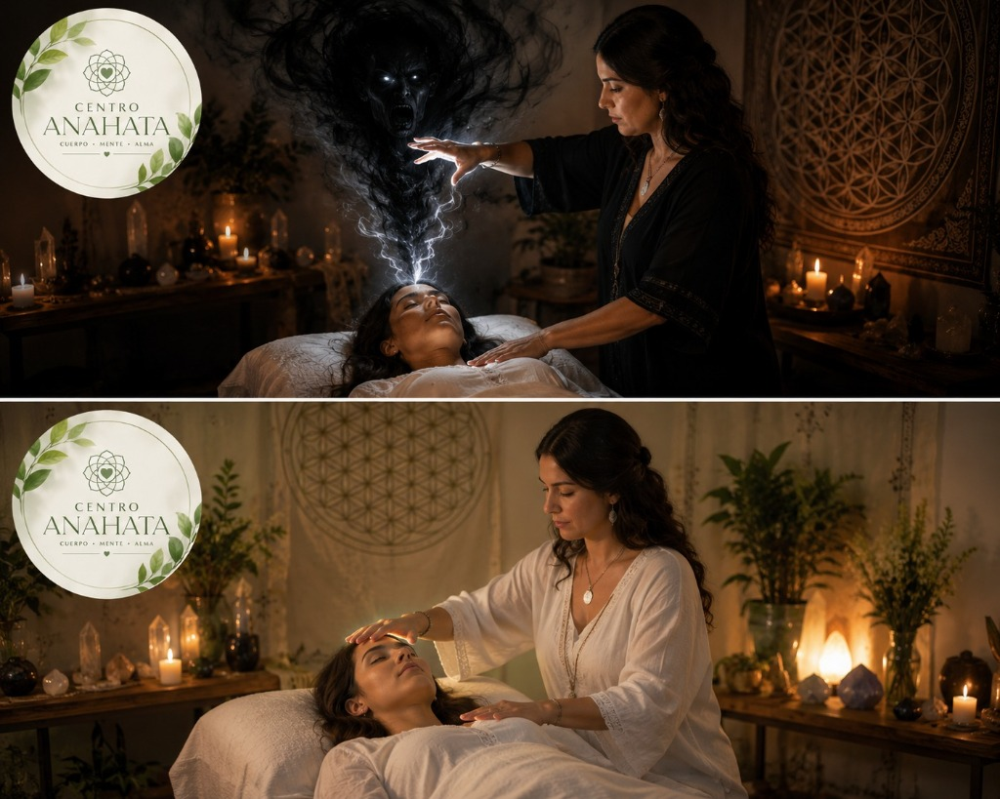
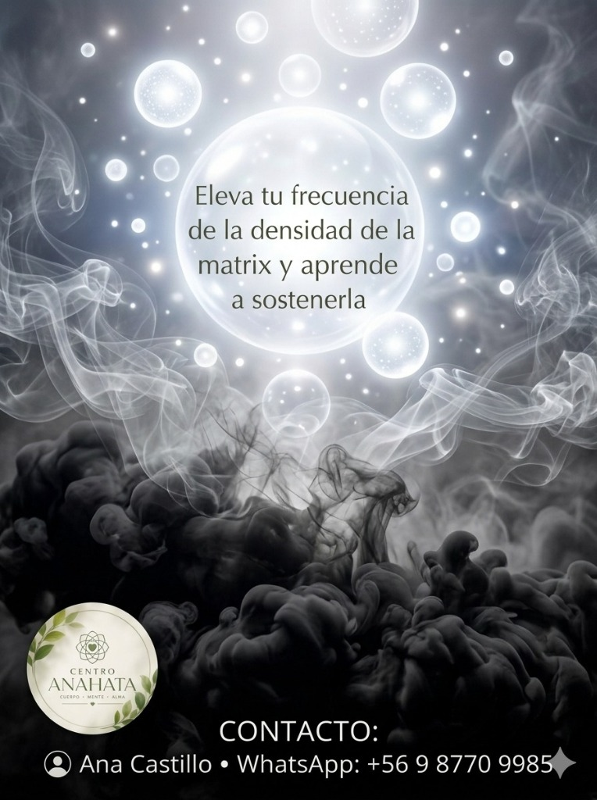

Cuerpo · Mente · Alma | Soberanía Humana & Autogestión
“No soy una terapeuta convencional. No vendo milagros, burbujas de protección ni dependencias esotéricas. Mi enfoque se basa en la Soberanía Humana.”
Entregarte las herramientas lógicas, racionales y técnicas para que aprendas a regular tu propia biología, hackear tus emociones y sostener tu mente en el presente. A través de mis capacidades perceptivas y mi formación técnica, actúo como un espejo: corto los bucles de ilusión y te entreno para que seas el único ejecutivo y soberano de tu realidad.

Soberanía Activa
Calibración Cuántica & Mental
Cero Dependencias
Autonomía Bioeléctrica
Cama de Cuarzo
Unión 641, Villa Alemana
Capacidades nativas perfeccionadas bajo metodologías rigurosas. Sin rituales ambiguos: decodificación objetiva, diagnóstico de campo e intervención precisa.
Capacidad de escanear y decodificar instantáneamente la vibración y la incoherencia de los espacios y las personas. Opera como un efecto esponja finamente regulado y aislado, transformando el registro sensitivo en información analítica sin absorber la carga densa.
Percepción extrasensorial a distancia. Habilidad nativa para detectar intenciones, pensamientos dirigidos y sintonizar en tiempo real con el estado emocional del consultante, eliminando barreras geográficas en sesiones remotas vía Google Meet.
Capacidad técnica de observar e identificar interferencias, larvas y anomalías en el plano sutil con los ojos abiertos. Permite una localización espacial exacta de los bloqueos antes de iniciar cualquier maniobra de limpieza o desprogramación.
Uso de la palabra y la voz como un bisturí sutil capaz de desactivar implantes, pensamientos parásitos y estructuras de engaño en el plano mental del estudiante al instante. Desmorona las narrativas victimistas y restablece la soberanía cognitiva.
Las leyes de la física cuántica demuestran que la información está interconectada. En Centro Anahata no especulamos: operamos sobre la arquitectura energética con protocolos verificables para desanclarte de las trampas de la matriz mental.
La percepción sin método es delirio. La técnica sin visión es estéril. Ana Castillo respalda cada sesión con formación especializada y entrenamiento de alto calibre.
Entrenamiento en proyección técnica de la conciencia a través de coordenadas de tiempo y espacio. Permite recopilar información fidedigna del campo cuántico sin sesgos perceptivos, accediendo a eventos causales y memorias no resueltas.
Comprensión quirúrgica del lenguaje del cuerpo, sus síntomas físicos, somatizaciones y los mandatos transgeneracionales grabados en el clan familiar. Se desactiva el código biológico del conflicto para devolver la homeostasis al organismo.
Formación avanzada en extirpación, desinfección energética y reparación de roturas áuricas provocadas por larvas, implantes e interferencias sutiles. Se restablece la integridad del cuerpo etérico garantizando que no queden filtraciones de energía vital.

La mayoría de las personas asisten a terapias para sentirse aliviadas durante 48 horas y luego rebotan a la misma densidad emocional. Esto ocurre porque no se les enseñó la arquitectura del campo ni cómo gestionar su propia biología.
Lo que NO hacemos
Promesas mágicas, dependencia de amuletos, justificaciones del ego ni evasión espiritual pasiva.
El Método Anahata
Autogestión mental, hackeo emocional, desprogramación del clan y soberanía biológica permanente.
Procesos formativos diseñados para desmantelar la estructura del síntoma y erigir un criterio soberano en tu vida cotidiana.
Entrenamiento Intensivo 1 a 1 (Personalizado)
Formato de Inmersión
6 horas cronológicas divididas en 3 días consecutivos
Proceso a la medida de tu mente para desarmar pensamientos intrusivos, extirpar cargas del linaje familiar y activar tu diseño original. Un entrenamiento quirúrgico donde nos sentamos a calibrar tu campo sutil, limpiar interferencias y dotarte de un protocolo mental inviolable.
Talleres Grupales Online
Modalidad Grupal
Intensivos Sincrónicos vía Google Meet
Talleres intensivos online orientados al aprendizaje práctico de protección de campo, lectura de entorno y biodecodificación personal. Aprenderás a diagnosticar cuándo estás bajo interferencia y cómo aplicar técnicas de soberanía sin recurrir a terceros.
Conoce cuándo se publican nuestros anuncios, la apertura periódica de cupos, actividades grupales y las transmisiones en vivo realizadas directamente por TikTok con Ana Castillo.
Sesiones abiertas en tiempo real donde abordamos el hackeo de la matrix mental, análisis perceptivo de interferencias sutiles, biodecodificación de casos de la audiencia y respuestas quirúrgicas a dudas de la comunidad. Sin rodeos new age: análisis puro y herramientas de soberanía.
Directos periódicos para resolver inquietudes en vivo, abordar desparasitación sutil y soberanía cognitiva con la audiencia.
Ciclos quincenales (1° y 15 de cada mes). Publicación de fechas y disponibilidad para el entrenamiento intensivo de 6 horas.
Encuentros sincrónicos online vía Google Meet. Las fechas de cada módulo se anuncian anticipadamente por TikTok y WhatsApp.
Lanzamiento de jornadas presenciales en Villa Alemana (cama de cuarzo), publicaciones de nuevas guías y avisos institucionales.
Ya sea de forma presencial en nuestro centro acondicionado o a distancia desde cualquier punto del mundo, la experiencia mantiene el mismo nivel de exactitud y rigor.
Ubicado en Villa Alemana, nuestro espacio está diseñado para aislar el ruido exterior y garantizar una regulación bioeléctrica profunda. La cama de cuarzo amplifica la coherencia del campo mórfico y facilita la absorción y descarga de memorias celulares.
A través de la visión remota y la interconexión cuántica no-local, la distancia física no representa obstáculo alguno. Atendemos a consultantes de todo Chile y del extranjero con la misma exactitud en el escaneo y la resolución del conflicto.
Conéctate a las transmisiones periódicas en directo, debates de soberanía humana, biodecodificación en tiempo real y anuncios oficiales de fechas y reuniones.